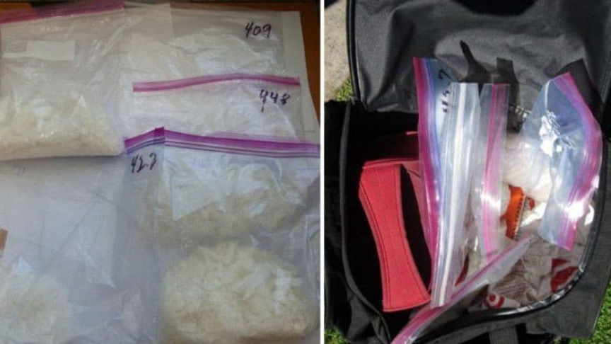
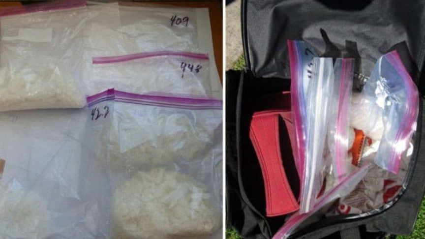

California Man Heads to Prison for Darkweb Meth Sales
A 65-year-old from California, the elder of a father-son crew behind three darkweb vendor accounts, was sentenced to 15 years in prison for his role in a methamphetamine trafficking operation.
William Thomas Glarner III dropped off two packages of methamphetamine at a Post Office in Los Alamitos FedEx office in Cypress, prosecutors said. The packages contained a combined total of 121 grams of methamphetamine. The police arrested the man in March after conducting a traffic stop and finding three pounds of meth alongside other “materials consistent with the packaging and distribution of narcotics,” a Special Agent from Homeland Security Investigations said.
Earlier this year a federal grand jury convicted Glarner of one count of possession to distribute methamphetamine and two counts of attempted distribution of methamphetamine. United States District Judge David O. Carter sentenced Glarner to 15 years in prison after saying the man had earned his sentence and had “spent a lifetime” working towards time in federal prison. The charges came with a mandatory minimum prison sentence of ten years and a maximum of life imprisonment.
Federal investigators learned about Glarner’s activities during an investigation into the man’s son, William Thomas Glarner IV, a.k.a. “Billy,” 34, of Irvine, California. In a plea agreement entered in July of this year, son pleaded guilty to a single count of methamphetamine distribution. In the plea agreement the younger Glarner admitted that he obtained drugs from various sources, and along with others, mailed drugs to customers on darkweb marketplaces. He admitted using the United States Postal Service as well as other couriers to ship packages to customers throughout the United States. The son also said that his father worked as his shipper and dropped packages of methamphetamine off at various couriers.
Investigators had been building a case against the younger Glarner when a security officer from the community where Glarner lived called law enforcement about a possible gas and/or water leak involving Glarner’s house. The police showed up shortly before Glarner and advised him that the lock on his door had broken and that someone had possibly broken into his house. The younger Glarner allowed the police to walk through his house to check for any signs of a break in. Inside the house, according to court documents, a police officer saw what he believed to be methamphetamine on the kitchen table and hundreds of USPS packages in another room.
Acting on the information above, law enforcement obtained a search warrant for Glarner’s home and seized more than three pounds of methamphetamine. Materials consistent with packaging narcotics, such as mailing bags with handwritten numbers that appeared to correspond with the weight of the suspected narcotics contained therein, were recovered from a car owned by the younger Glarner.
In his plea agreement, William Thomas Glarner IV admitted
Using at least three monikers to obscure his true identity on the darknet, defendant conducted over 1,500 sales of controlled substances, including methamphetamine, on the darknet. Defendant would obtain drugs from various sources of supply, and along with others, would fulfill sales made on the darknet to customers around the country. Defendant’s associates would mail the drugs to customers using services such as the United States Postal Service and commercial couriers such as Federal Express.
Glarner IV is scheduled to be sentenced on November 4, at which time he will face a mandatory minimum sentence of 10 years in federal prison and a statutory maximum sentence of life in prison.
Archived Press Release |
William Thomas Glarner III dropped off two packages of methamphetamine at a Post Office in Los Alamitos FedEx office in Cypress, prosecutors said. The packages contained a combined total of 121 grams of methamphetamine. The police arrested the man in March after conducting a traffic stop and finding three pounds of meth alongside other “materials consistent with the packaging and distribution of narcotics,” a Special Agent from Homeland Security Investigations said.
Earlier this year a federal grand jury convicted Glarner of one count of possession to distribute methamphetamine and two counts of attempted distribution of methamphetamine. United States District Judge David O. Carter sentenced Glarner to 15 years in prison after saying the man had earned his sentence and had “spent a lifetime” working towards time in federal prison. The charges came with a mandatory minimum prison sentence of ten years and a maximum of life imprisonment.
Pictures of Methamphetamine and Packages Seized from Glarner's Home | Credit: KTLA
Federal investigators learned about Glarner’s activities during an investigation into the man’s son, William Thomas Glarner IV, a.k.a. “Billy,” 34, of Irvine, California. In a plea agreement entered in July of this year, son pleaded guilty to a single count of methamphetamine distribution. In the plea agreement the younger Glarner admitted that he obtained drugs from various sources, and along with others, mailed drugs to customers on darkweb marketplaces. He admitted using the United States Postal Service as well as other couriers to ship packages to customers throughout the United States. The son also said that his father worked as his shipper and dropped packages of methamphetamine off at various couriers.
Investigators had been building a case against the younger Glarner when a security officer from the community where Glarner lived called law enforcement about a possible gas and/or water leak involving Glarner’s house. The police showed up shortly before Glarner and advised him that the lock on his door had broken and that someone had possibly broken into his house. The younger Glarner allowed the police to walk through his house to check for any signs of a break in. Inside the house, according to court documents, a police officer saw what he believed to be methamphetamine on the kitchen table and hundreds of USPS packages in another room.
Acting on the information above, law enforcement obtained a search warrant for Glarner’s home and seized more than three pounds of methamphetamine. Materials consistent with packaging narcotics, such as mailing bags with handwritten numbers that appeared to correspond with the weight of the suspected narcotics contained therein, were recovered from a car owned by the younger Glarner.
In his plea agreement, William Thomas Glarner IV admitted
Using at least three monikers to obscure his true identity on the darknet, defendant conducted over 1,500 sales of controlled substances, including methamphetamine, on the darknet. Defendant would obtain drugs from various sources of supply, and along with others, would fulfill sales made on the darknet to customers around the country. Defendant’s associates would mail the drugs to customers using services such as the United States Postal Service and commercial couriers such as Federal Express.
Glarner IV is scheduled to be sentenced on November 4, at which time he will face a mandatory minimum sentence of 10 years in federal prison and a statutory maximum sentence of life in prison.
Archived Press Release |